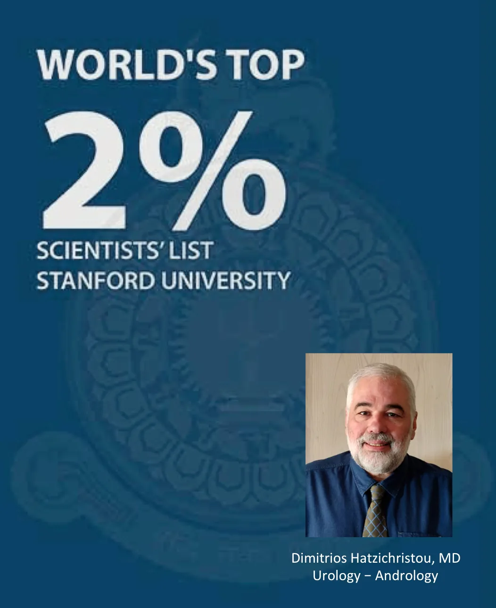

Με την παράδοση του αρχαιότερου ιατρείου της πόλης – ιδρύθηκε το 1956 από τον καθηγητή Γεώργιο Χατζηχρήστου και τον διαδέχθηκε ο καθηγητής Δημήτρης Χατζηχρήστου -, το ιατρείο συνδυάζει την εμπειρία 67 χρόνων λειτουργίας με την χρήση της πλέον εξελιγμένης τεχνολογίας στη διάγνωση και αντιμετώπιση Ουρολογικών παθήσεων.
Η κλινική και χειρουργική εμπειρία, καθώς και το ερευνητικό έργο με περισσότερες από 150 διεθνείς δημοσιεύσεις του καθηγητή Δ. Χατζηχρήστου έχουν αναγνωριστεί διεθνώς, με αποτέλεσμα επί 25 και πλέον έτη να συμμετέχει ως εκπαιδευτής Ουρολόγων σε περισσότερες από 300 εκπαιδευτικές δραστηριότητες στο εξωτερικό. Στον Ελλαδικό χώρο διοργανώνει από 20ετίας εκπαιδευτικές δράσεις, ορισμένες από τις οποίες – όπως το Σχολείο Ουρολογίας και Andrology update – αποτελούν πλέον θεσμούς στην εκπαίδευση των ουρολόγων.
Η πολυετής εμπειρία και η διεθνής καταξίωση, η εφαρμογή στην κλινική πράξη της νέας γνώσης και τεχνολογίας αιχμής, υπηρετούν άριστα ένα ολιστικό μοντέλο αντιμετώπισης των ανθρώπων με Ουρολογικά και Ανδρολογικά προβλήματα. Τέλος η συνεργασία με μία έμπειρη και καταξιωμένη ομάδα επαγγελματιών υγείας βελτιστοποιεί το θεραπευτικό αποτέλεσμα.

Το Πανεπιστήμιο του Stanford δημοσίευσε τον Νοέμβριο του 2023 τη λίστα «World’s Top 2% Scientists».
Αυτή η κατάταξη με το 2% των κορυφαίων επιστημόνων του κόσμου θεωρείται η πιο διάσημη και έγκυρη παγκοσμίως. Περιλαμβάνει αξιολόγηση πάνω από 180.000 επιστημόνων παγκόσμια, των πλέον ενεργών σε 22 επιστημονικά πεδία και 176 υποπεδία όλων των επιστημών.
Αντανακλά την επίδραση των επιστημόνων αυτών στην εξέλιξη της επιστήμης τους που οδηγεί στην πρόοδο και την καινοτομία, διευρύνοντας τα όρια της γνώσης
Οι δραστηριότητες του καθηγητή Δημήτρη Χατζηχρήστου έχουν τρεις άξονες:
- Σε κλινικό επίπεδο, η εμπειρία σε περισσότερους από 30000 ασθενείς συνδυάστηκε πάντα με τεχνολογία αιχμής και την εφαρμογή κάθε νέας θεραπείας. Συνδέθηκε το όνομα του διεθνώς με πολλές νέες διαγνωστικές (αιμοδυναμικός έλεγχος στύσης, καταγραφή νυκτερινών στύσεων) και θεραπευτικές τεχνικές (πολυτροπικές θεραπείες, πλαστικές αποκατάστασης νόσου Peyronie, ορθή χρήση φαρμακευτικών σκευασμάτων, χρήση κρουστικών κυμάτων), αφού μέσα από δικές του ερευνητικές προσπάθειες καθιερώθηκαν ή βελτιώθηκαν. Τα τελευταία 10 έτη πρωτοστατεί διεθνώς στην έρευνα για την ανάπτυξη πρωτοκόλλων χρήσης των κρουστικών κυμάτων στην αντιμετώπιση της στυτικής δυσλειτουργίας και τη χρόνιας μη βακτηριακής προστατίτιδας / χρόνιου πυελικού πόνου, ενώ το 2010 πρώτος στον Ελλαδικό χώρο και δεύτερος διεθνώς εφάρμοσε τα κρουστικά κύματα στην αντιμετώπιση της στυτικής δυσλειτουργίας. Τέλος είναι το ιατρείο που έφερε την εφαρμογή στη Βόρεια Ελλάδα της laser προστατεκτομής και της τρισδιάστατης απεικόνισης του προστάτη αδένα.
- Σε ερευνητικό επίπεδο πρωτοστατεί επί 30 έτη στην έρευνα διεθνώς με περισσότερες από 150 διεθνείς δημοσιεύσεις και τον μεγαλύτερο αριθμό βιβλιογραφικών αναφορών μεταξύ των Ελλήνων Ουρολόγων. Τιμήθηκε από την Ιατρική Σχολή του ΑΠΘ το με το βραβείο Αριστείας στην έρευνα, ως ο καθηγητής Ιατρικής με τη μεγαλύτερη διεθνή αναγνώριση του ερευνητικού του έργου. Το έργο του έχει τιμηθεί με 7 Διεθνή βραβεία και 5 Ελληνικά.
- Σε εκπαιδευτικό επίπεδο, το 1998 οργάνωσε το Κέντρο Σεξουαλικής και Αναπαραγωγικής υγείας του ΑΠΘ με ετήσιες εκπαιδευτικές δράσεις σε όλη την Ελλάδα και το εξωτερικό, ενώ το 2008 ξεκινά το Ινστιτούτο Μελέτης Ουρολογικών Παθήσεων (www.imop.gr) με πολλαπλές δράσεις και κύρια ετήσια εκπαιδευτική εκδήλωση το Σχολείο Ουρολογίας στην Πορταριά του Πηλίου. Τιμήθηκε από την Ιατρική Σχολή του ΑΠΘ το 2015 με Έπαινο Αριστείας Διδασκαλίας μετά από αξιολόγηση των φοιτητών της Σχολής.
Σπουδές
Ο Δημήτρης Χατζηχρήστου ολοκλήρωσε τις εγκύκλιες σπουδές του (Πτυχίο Ιατρικής, Διδακτορική Διατριβή και ειδικότητα Ουρολογίας) στο Αριστοτέλειο Πανεπιστήμιο Θεσσαλονίκης. Αμέσως μετά μετεκπαιδεύτηκε επί 3ετία στις Η.Π.Α., και συγκεκριμένα στην Ανδρολογία (υπογονιμότητα, σεξουαλική λειτουργία) στο Πανεπιστήμιο της Βοστώνης και κατόπιν στις παθήσεις του προστάτη αδένα και τις διαταραχές της ούρησης στο Πανεπιστήμιο του Stanford της Καλιφόρνιας.
Ακαδημαϊκή Καριέρα
Με την επιστροφή του στην Ελλάδα εκλέχθηκε Λέκτορας Ουρολογίας / Ανδρολογίας στο Α.Π.Θ. το 1993, όπου εξελίχθηκε στην ακαδημαϊκή ιεραρχία (Επίκουρος και Αναπληρωτής Καθηγητής) και το 2006 εξελέγη Καθηγητής Ουρολογίας της Ιατρικής Σχολής του Α.Π.Θ. Επίσης, ίδρυσε και οργάνωσε το Ινστιτούτο Μελέτης Ουρολογικών Παθήσεων (www.imop.gr), μία εκπαιδευτική και ερευνητική μονάδα, της οποίας ηγείται μέχρι σήμερα (Πρόεδρος).
Διεθνής Επιστημονική Παρουσία
Ο Δ. Χατζηχρήστου από το 1995 συμμετέχει από διάφορες θέσεις στην Ευρωπαϊκή Ουρολογική Εταιρεία (European Association of Urology-EAU). Eίναι ιδρυτικό μέλος του Ανδρολογικού Τμήματος της Ευρωπαϊκής Ουρολογικής Εταιρείας (European Section of Andrological Urology – ESAU) , μέλος της Επιτροπής για τις κατευθυντήριες οδηγίες της ίδιας εταιρείας τα τελευταία 8 χρόνια (EAU guidelines office), και έχει θητεία ως εκπαιδευτής στο Ευρωπαϊκό Σχολείο Ουρολογίας (European School of Urology – ESU). Επίσης θήτευσε και ως μέλος στο Regulatory Office της EAU (2005-2008).
Το 1995 οργάνωσε το ιδρυτικό συνέδριο της Ευρωπαϊκής Εταιρείας Σεξουαλικής Ιατρικής (European Society for Sexual Medicine-ESSM) στο Πόρτο Καρράς της Χαλκιδικής και μετά υπηρέτησε επί 11 χρόνια σε διάφορες θέσεις στην εταιρεία, μεταξύ των οποίων Γενικός Γραμματέας τη διετία 1995-97 και Πρόεδρος την τριετία 2001-2004. Το 1998 ίδρυσε το Κέντρο Σεξουαλικής και Αναπαραγωγικής Υγείας (ΚΕΣΑΥ) στο Α.Π.Θ., ως το Ελληνικό Γραφείο της Ευρωπαϊκής Συμμαχίας για τη Σεξουαλική Υγεία (Εuropean Sexual Health Alliance – ESHA), της οποίας χρημάτισε Πρόεδρος (2004-06). Είναι επίσης μέλος του Διοικητικού Συμβουλίου (Board of Trustees) της Ευρωπαϊκής Ακαδημίας Σεξουαλικής Ιατρικής (European Academy for Sexual Medicine –EASM). Τέλος είναι μέλος της Διεθνούς Συμβουλευτικής Επιτροπής υπό την αιγίδα της Παγκόσμιας Οργάνωσης Υγείας και πρόεδρος της επιτροπής για την κλινική αξιολόγηση των ασθενών με σεξουαλικές δυσλειτουργίες (http://icsm2009.meetingsevents.org/website/index.php?page=committees).
Ερευνητικό και Συγγραφικό Έργο
Το ερευνητικό του έργο εστιάζεται στο γεννητικό σύστημα του άνδρα (παθήσεις όρχεων-προστάτη-πέους) και έχει συγγράψει 103 άρθρα σε Διεθνή περιοδικά που έχουν πάρει περισσότερες από 6000 αναφορές από άλλους συγγραφείς (h factor: 35), 82 άρθρα σε Ελληνικά περιοδικά, ενώ έχει τιμηθεί με 4 βραβεία σε διεθνή συνέδρια και 4 βραβεία σε Ελληνικά.
Επίσης υπηρέτησε ως μέλος στη συντακτική επιτροπή των περιοδικών Urologia Internationalis, Journal of Sexual Medicine, International Journal of Impotence Research, International Journal for Sexual Health και είναι κριτής αξιολόγησης των άρθρων σε 21 Διεθνή περιοδικά, μεταξύ των οποίων τα κορυφαία της ειδικότητας Journal of Urology, European Urology, British Journal of Urology International και Urology.
Διδακτικό και Εκπαιδευτικό Έργο
Πέρα από το διδακτικό του έργο στο Αριστοτέλειο Πανεπιστήμιο Θεσσαλονίκης (προπτυχιακό και μεταπτυχιακό πρόγραμμα σπουδών Ιατρικής Σχολής), έχει συνεχή και έντονη επιστημονική παρουσία ως ομιλητής/εκπαιδευτής στην Ελλάδα (πάνω από 250 ομιλίες) και στο εξωτερικό (πάνω από 120 ομιλίες). Από το 2008 οργανώνει κάθε χρόνο το Διαδραστικό Σχολείο Ουρολογίας, ένα σχολείο διαλόγου που σκοπό έχει την συνεχή ενημέρωση/εκπαίδευση νέων Ελλήνων Ουρολόγων στις εξελίξεις της ειδικότητας.
Έχει συγγράψει 21 κεφάλαια σε διεθνή ξενόγλωσσα βιβλία και 6 κεφάλαια σε Ελληνικά βιβλία, ενώ 2 φορές ήταν φιλοξενούμενος συντάκτης ειδικών τευχών (supplements) διεθνών περιοδικών και άλλες 2 φιλοξενούμενος συντάκτης ειδικών τευχών (supplements) Ελληνικών περιοδικών. Τέλος έχει επιμεληθεί την Ελληνική έκδοση του βιβλίου “Penn Clinical Manual of Urology” (Εκδόσεις «Ιπποκράτης», Θεσσαλονίκη 2009).
Κλινικό και Χειρουργικό Έργο
Το κλινικό και χειρουργικό του έργο καλύπτει το ευρύ φάσμα της ειδικότητας, με έμφαση στη χειρουργική του ουροποιητικού και γεννητικού συστήματος. Ειδικότερα τα χειρουργικά ενδιαφέροντα είναι οι ελάχιστα επεμβατικές τεχνικές για την αντιμετώπιση παθήσεων του προστάτη, η μικροχειρουργική αντιμετώπιση της ανδρικής υπογονιμότητας, η χειρουργική αντιμετώπιση στυτικής δυσλειτουργίας (επεμβάσεις αγγειακών προβλημάτων πέους, τοποθέτηση πεϊκών προθέσεων), οι πλαστικές επεμβάσεις του πέους και της ουρήθρας (αποκατάσταση της νόσου του Peyronie, στενωμάτων ουρήθρας, ακράτεια ούρων), ενώ από το 2008 εφαρμόζει πρωτοποριακά και αποκλειστικά για τη Βόρεια Ελλάδα το laser του πράσινου φωτός (green light laser) για την αναίμακτη, με 1 ημέρα νοσηλεία, ενδοσκοπική αντιμετώπιση της υπερτροφίας του προστάτη, στενωμάτων ουρήθρας και επιφανειακών όγκων της κύστης.
Επιστημονικές Δημοσιεύσεις
Σε Διεθνή Περιοδικά125 εγγραφές
- Sokolakis I, Dimitriadis F, Psalla D, Karakiulakis G, Kalyvianakis D, Hatzichristou D. Effects of low-intensity shock wave therapy (LiST) on the erectile tissue of naturally aged rats. Int J Impot Res. 2018 Aug 17. doi: 10.1038/s41443-018-0064-0.
- Kalyvianakis D, Memmos E, Mykoniatis I, Kapoteli P, Memmos D, Hatzichristou D. Low-Intensity Shockwave Therapy for Erectile Dysfunction: A Randomized Clinical Trial Comparing 2 Treatment Protocols and the Impact of Repeating Treatment. J Sex Med. 2018 Mar;15(3):334-345.
- Kalyvianakis D, Hatzichristou D. Low-Intensity Shockwave Therapy Improves Hemodynamic Parameters in Patients With Vasculogenic Erectile Dysfunction: A Triplex Ultrasonography-Based Sham-Controlled Trial. J Sex Med. 2017 Jul;14(7):891-897.
- Hatzichristou D. Low-Intensity Extracorporeal Shock Waves Therapy (LI-ESWT) for the treatment of erectile dysfunction: Where do we stand? European Urology Eur Urol. 2017;71(2):234-236.
- Sfoungaristos S, Mykoniatis I, Poulios E, Paikos D, Hatzichristou D. Percutaneous Nephrolithotomy in a Patient with Mainz Pouch II Urinary Diversion: A Case Report. Prague Med Rep 2016;117(4):198-203.
- Ferenidou F, Kirana PS, Fokas K, Hatzichristou D, Athanasiadis L. Sexual Response Models: Toward a More Flexible Pattern of Women’s Sexuality. J Sex Med. 2016;13(9):1369-76.
- Hatzichristou D, Kirana PS, Banner L, Althof SE, Lonnee-Hoffmann RA, Dennerstein L, Rosen RC. Diagnosing Sexual Dysfunction in Men and Women: Sexual History Taking and the Role of Symptom Scales and Questionnaires. J Sex Med. 2016;13(8):1166-82.
- Hatzichristou D, d’Anzeo G, Porst H, Buvat J, Henneges C, Rossi A, Hamidi K, Büttner H. Tadalafil 5 mg once daily for the treatment of erectile dysfunction during a 6-month observational study (EDATE): impact of patient characteristics and comorbidities. BMC Urol. 2015 Nov 12;15:111.
- Buvat J, Hatzichristou D, Boess FG, Büttner H, Gehchan N, Henneges C, Porst H. Continuation and effectiveness of tadalafil once daily during a 6-month observational study in erectile dysfunction: the EDATE study. Int J Clin Pract. 2014 Sep;68(9):1087-99.
- Hatzimouratidis K, Hatzichristou D. How to treat erectile dysfunction in men with diabetes: from pathophysiology to treatment. Current Diabetes Reports 2014;14(11):545.
- Tsimtsiou Z., Kirana PS, Hatzimouratidis K., Hatzichristou D. What is the profile of patients thinking of litigation? Results from the hospitalized and outpatients’ profile and expectations study. Hippokratia, 18: 2, 2014.
- Salonia A, Eardley I, Giuliano F, Hatzichristou D, Moncada I, Vardi Y, Wespes E, Hatzimouratidis K. European Association of Urology Guidelines on Priapism. Eur Urol 2014, 65:480 – 489.
- Martin Morales A., Hatzichristou D, Ramon Llados J., Pascual Renedo V., Pimenidou A. “Community pharmacy detection of erectile dysfunction in men with risk factors or who seek treatment or advice but lack a valid prescription”, Journal of Sexual Medicine, 2013,10: 2303-231.
- Panteliou SD, Tzortzis V, Anagnostopoulos GT, Sunaric MM, Sarris J, Hatzimouratidis K, Hatzichristou, D. Development of a new optical device and its feasibility in prostate cancer detection. Urol Int 2012, 89:290 – 295.
- Hatzichristou D. Post-radical prostatectomy erectile function: The five Ws and the H. EurUrol 2012, 62:287-289.
- Hatzimouratidis K, Eardley I, Giuliano F, Hatzichristou D, Moncada I, Salonia A, Vardi Y, Wespes E. Guidelines on Penile Curvature. Eur Urol 2012, 62:543 – 552.
- Tsimtsiou Z., Benos A., Garyfallos A.A., Hatzichristou D. Determinants of Physicians Attitudes Toward Sharing Information With Patients and Addressing Psychosocial Needs: A Cross-Sectional Study in Greece. Health Comm 2012, 27:257-263.
- Gacci M., Eardley I., Giuliano F., Hatzichristou D, Link C., Maggi M., McVary K., Mirone V., Porst H., Roehrborn C.G. Critical analysis of the relationship between sexual dysfunctions and lower urinary tract symptoms due to benign prostatic hyperplasia. Eur Urol, 60: 809-825, 2011.
- Goulis DC, Mintziori G. Koliakos N, Hatzichristou D, Papadimas I, Hatzimouratidis K, Goulis DG. Inhibin B and anti-müllerian hormone in spermatic vein of subfertile men with varicocele. Reprod Sci 2011, 18:551 – 555.
- Papaharitou S, Nakopoulou E, Moraitou M, Hatzichristou D. Assisted reproduction and midwives: student and certified midwives’ educational needs on reproductive biology. Sex Reprod Healthc. 2010, 1(4):163-8.
- Montorsi F, Adaikan G, Becher E, Giuliano F, Khoury S, Lue TF, Sharlip I, Althof SE, Andersson KE, Brock G, Broderick G, Burnett A, Buvat J, Dean J, Donatucci C, Eardley I, Fugl-Meyer KS, Goldstein I, Hackett G, Hatzichristou D, Hellstrom W, Incrocci L, Jackson G, Kadioglu A, Levine L, Lewis RW, Maggi M, McCabe M, McMahon CG, Montague D, Montorsi P, Mulhall J, Pfaus J, Porst H, Ralph D, Rosen R, Rowland D, Sadeghi-Nejad H, Shabsigh R, Stief C, Vardi Y, Wallen K, Wasserman M. Summary of the recommendations on sexual dysfunctions in men.J Sex Med. 2010 Nov;7(11):3572-88.
- Meuleman E., Hatzichristou D, Rosen R.C., Sadovsky R. Diagnostic Tests for Male Erectile Dysfunction Revisited. Journal of Sexual Medicine, 2010, 7:2375-2381.
- Hatzimouratidis K, Amar E, Eardley I, Giuliano F, Hatzichristou D, Montorsi F, Vardi Y, Wespes E. Guidelines on Male Sexual Dysfunction: Erectile Dysfunction and Premature Ejaculation. Eur Urol. 2010; 57:804 – 814.
- Hatzichristou D, Rosen RC, Derogatis LR, Low WY, Meuleman EJ, Sadovsky R, Symonds T. Recommendations for the clinical evaluation of men and women with sexual dysfunction. J Sex Med. 2010;7(1 Pt 2):337-48.
- Apostolidis A, Kirana PS, Chiu G, Link C, Tsiouprou M, Hatzichristou D. Gender and Age Differences in the Perception of Bother and Health Care Seeking for Lower Urinary Tract Symptoms: Results from the Hospitalised and Outpatients’ Profile and Expectations Study. Eur Urol. 2009; 56(6): 937 – 947.
- Kirana PS, Papaharitou S, Athanasiadis L, Nakopoulou E, Salpiggidis G, Moysidis K, Pipilaki C, Hatzimouratidis K, Tzotstzis V, Portseli A, Iraklidou M, Apostolidis A, Bekos A, Hatzichristou D. A conceptual framework for the evolution of sexual medicine and a model for the development of alternative sexual health services: 10-years experience of the Centre for Sexual and Reproductive Health. J Sex Med. 2009 Sep;6(9):2405-16.
- Hatzimouratidis K, Hatzichristou DG. Phosphodiesterase type 5 inhibitors: unmet needs. Curr Pharm Des. 2009;15(30):3476-85.
- Kirana PS, Rosen R, Hatzichristou D. Subjective well- being as a determinant of individuals’ responses to symptoms: Development of a biopsychosocial conceptual framework. Int J Clin Pract. 2009 Oct;63(10):1435-45.
- Nakopoulou E, Kirana PS, Chiu G, Link C, Rosen R, Hatzichristou D. Level of bother and treatment seeking predictors among male and female in-patients with sexual problems: A hospital-based study. J Sex Med. 2009 Nov 24.
- Nakopoulou E, Papaharitou S, Hatzichristou D. Patients’ sexual health: a qualitative research approach on Greek nurses’ perceptions. J Sex Med. 2009 Aug;6(8):2124-32.
- Hatzichristou D. Iñigo Sáenz de Tejada y Gorman – An aristocrat and pioneer in sexual medicine. Eur Urol. 2009 Jul;56(1):234-5.
- Hatzimouratidis K, Burnett AL, Hatzichristou D, McCullough AR, Montorsi F, Mulhall JP. Phosphodiesterase type 5 inhibitors in postprostatectomy erectile dysfunction: a critical analysis of the basic science rationale and clinical application. Eur Urol. 2009 Feb;55(2):334-47.
- Buvat J, Hatzichristou D, Maggi M, Farmer I, Martínez-Jabaloyas JM, Miller PJ, Schnetzler G. Efficacy, tolerability and satisfaction with sildenafil citrate 100-mg titration compared with continued 50-mg dose treatment in men with erectile dysfunction. BJU Int. 2008 Dec;102(11):1645-50.
- Hatzichristou D. Understanding individuals’ response to erectile dysfunction. Int J Impot Res. 2008 Dec;20 Suppl 2:S15-20.
- Hatzimouratidis K, Moysidis K, Bekos A, Giakoumelos A, Hatzichristou D. What is adequate management to preserve erectile function after unilateral nerve-sparing radical prostatectomy? J Endourol. 2008 Sep;22(9):2029-31.
- Papaharitou S, Nakopoulou E, Moraitou M, Tsimtsiou Z, Konstantinidou E, Hatzichristou D. Exploring sexual attitudes of students in health professions. J Sex Med. 2008 Jun;5(6):1308-16.
- Papaharitou S, Nakopoulou E, Kirana P, Giaglis G, Moraitou M, Hatzichristou D. Factors associated with sexuality in later life: An exploratory study in a group of Greek married older adults. Arch Gerontol Geriatr. 2008 Mar-Apr;46(2):191-201.
- Bekos A, Arvaniti M, Hatzimouratidis K, Moysidis K, Tzortzis V, Hatzichristou D. The natural history of Peyronie’s disease: an ultrasonography-based study. Eur Urol. 2008 Mar;53(3):644-50.
- Ferenidou F, Kapoteli V, Moisidis K, Koutsogiannis I, Giakoumelos A, Hatzichristou D. Presence of a sexual problem may not affect women’s satisfaction from their sexual function. J Sex Med. 2008 Mar;5(3):631-9.
- Hatzichristou D, Gambla M, Rubio-Aurioles E, Buvat J, Brock GB, Spera G, Rose L, Lording D, Liang S. Efficacy of tadalafil once daily in men with diabetes mellitus and erectile dysfunction. Diabet Med. 2008 Feb;25(2):138-46.
- Hatzimouratidis K, Hatzichristou DG. Looking to the future for erectile dysfunction therapies. Drugs. 2008;68(2):231-50.
- Kaplan SA, Hatzichristou D. Open to debate. The motion: PDE5 inhibitors will have a significant role in the treatment of BPH. Eur Urol. 2007 Nov;52(5):1523-7.
- Hatzichristou D, Haro JM, Martin-Morales A, von Keitz A, Riley A, Bertsch J, Belger M, Wolka AM, Beardsworth A; EDOS Group. Patterns of switching phosphodiesterase type 5 inhibitors in the treatment of erectile dysfunction: results from the Erectile Dysfunction Observational Study. Int J Clin Pract. 2007 Nov;61(11):1850-62.
- Hatzimouratidis K, Hatzichristou D. Testosterone and erectile function: an unresolved enigma. Eur Urol. 2007 Jul;52(1):26-8.
- Papaharitou S, Nakopoulou E, Moraitou M, Hatzimouratidis K, Hatzichristou D. Reproductive health and midwives: does occupational status differentiate their attitudes on assisted reproduction technologies from those of the general population? Hum Reprod. 2007 Jul;22(7):2033-9.
- Hatzimouratidis K, Koliakos N, Koutsogiannis I, Moisidis K, Giakoumelos A, Hatzichristou D. Removal of a detached head of the Brooks dilator from the corpora cavernosa during penile prosthesis implantation. J Sex Med. 2007 Jul;4(4 Pt 2):1179-81.
- Mitropoulos D, Papakonstantinou E, Aletras AJ, Kalinderis N, Zervas A, Hatzichristou D, Karakiulakis G. Terazosin modifies the content of glycosaminoglycans and the activity of matrix metalloproteinase 2 in the rat ventral prostate. Eur Urol. 2007 Feb;51(2):447-56.
- Tsimtsiou Z, Kerasidou O, Efstathiou N, Papaharitou S, Hatzimouratidis K, Hatzichristou D. Medical students’ attitudes toward patient-centred care: a longitudinal survey. Med Educ. 2007 Feb;41(2):146-53.
- Hatzimouratidis K, Hatzichristou D. Phosphodiesterase type 5 inhibitors: the day after. Eur Urol. 2007 Jan;51(1):75-88.
- Hatzimouratidis K, Hatzichristou D. Sexual dysfunctions: classifications and definitions.J Sex Med. 2007 Jan;4(1):241-50.
- Konstantinidou E, Apostolidis A, Kondelidis N, Tsimtsiou Z, Hatzichristou D, Ioannides E. Short-term efficacy of group pelvic floor training under intensive supervision versus unsupervised home training for female stress urinary incontinence: a randomized pilot study. Neurourol Urodyn. 2007;26(4):486-91.
- Porst H, Sharlip ID, Hatzichristou D, Rubio-Aurioles E, Gittelman M, Stancil BN, Smith PM, Wilkins HJ, Pommerville P; Vardenafil Study Group. Extended duration of efficacy of vardenafil when taken 8 hours before intercourse: a randomized, double-blind, placebo-controlled study. Eur Urol. 2006 Nov;50(5):1086-94
- McCullough AR, Carson CC, Hatzichristou D. A prospective study of the beneficial effects of dose optimization and customized instructions on patient satisfaction with sildenafil citrate (Viagra) for erectile dysfunction. Urology. 2006 Sep;68(3 Suppl):38-46.
- Hatzimouratidis K, Moysidis K, Bekos A, Tsimtsiou Z, Ioannidis E, Hatzichristou D. Treatment strategy for “non-responders” to tadalafil and vardenafil: a real-life study. Eur Urol. 2006 Jul;50(1):126-32.
- Broderick GA, Donatucci CF, Hatzichristou D, Torres LO, Valiquette L, Zhao Y, Loughney K, Sides GD, Ahuja S. Efficacy of tadalafil in men with erectile dysfunction naïve to phosphodiesterase 5 inhibitor therapy compared with prior responders to sildenafil citrate. J Sex Med. 2006 Jul;3(4):668-75.
- Tsimtsiou Z, Hatzimouratidis K, Nakopoulou E, Kyrana E, Salpigidis G, Hatzichristou D. Predictors of physicians’ involvement in addressing sexual health issues. J Sex Med. 2006 Jul;3(4):583-8.
- Wespes E, Amar E, Hatzichristou D, Hatzimouratidis K, Montorsi F, Pryor J, Vardi Y. EAU Guidelines on erectile dysfunction: an update. Eur Urol. 2006 May;49(5):806-15.
- Haro JM, Beardsworth A, Casariego J, Gavart S, Hatzichristou D, Martin-Morales A, Schmitt H, Mirone V, Needs N, Riley A, Varanese L, von Keitz A, Kontodimas S. Treatment-seeking behavior of erectile dysfunction patients in Europe: Results of the Erectile Dysfunction Observational Study. J Sex Med. 2006 May;3(3):530-40.
- Mallis D, Moisidis K, Kirana PS, Papaharitou S, Simos G, Hatzichristou D. Moderate and severe erectile dysfunction equally affects life satisfaction. J Sex Med. 2006 May;3(3):442-9.
- Heaton JW, Hatzichristou D. Open to debate: there is a role for chronic treatment with PDE5-inhibitors. Eur Urol. 2006 Apr;49(4):749-53.
- Papaharitou S, Athanasiadis L, Nakopoulou E, Kirana P, Portseli A, Iraklidou M, Hatzimouratidis K, Hatzichristou D. Erectile dysfunction and premature ejaculation are the most frequently self-reported sexual concerns: profiles of 9,536 men calling a helpline. Eur Urol. 2006 Mar;49(3):557-63.
- Athanasiadis L, Papaharitou S, Salpiggidis G, Tsimtsiou Z, Nakopoulou E, Kirana PS, Moisidis K, Hatzichristou D. Educating physicians to treat erectile dysfunction patients: development and evaluation of a course on communication and management strategies. J Sex Med. 2006 Jan;3(1):47-55.
- Dean, J., de Boer, B.-J., Graziottin, A., Hatzichristou, D., Heaton, J., Tailor, A. Effective Erectile Dysfunction (ED) Treatment Enables Men to Enjoy Better Sex: The Importance of Erection Hardness, Psychological Well-Being, and Partner Satisfaction (2006) European Urology, Supplements, 5 (13), pp. 761-766.
- Dean, J., de Boer, B.-J., Graziottin, A., Hatzichristou, D., Heaton, J., Tailor, A. The Role of Erection Hardness in Determining Erectile Dysfunction (ED) Treatment Outcome (2006) European Urology, Supplements, 5 (13), pp. 767-772.
- Dean, J., de Boer, B.-J., Graziottin, A., Hatzichristou, D., Heaton, J., Tailor, A. Erectile Dysfunction and Sexual Satisfaction: New Perspectives (2006) European Urology, Supplements, 5 (13), pp. 759-760.
- Dean, J., de Boer, B.-J., Graziottin, A., Hatzichristou, D., Heaton, J., Tailor, A. Psychological, Social, and Behavioural Benefits for Men Following Effective Erectile Dysfunction (ED) Treatment: Men Who Enjoy Better Sex Experience Improved Psychological Well-Being (2006) European Urology, Supplements, 5 (13), pp. 773-778.
- Dean, J., de Boer, B.-J., Graziottin, A., Hatzichristou, D., Heaton, J., Tailor, A. Partner Satisfaction and Successful Treatment Outcomes for Men with Erectile Dysfunction (ED) (2006) European Urology, Supplements, 5 (13), pp. 779-785
- Hatzimouratidis K, Hatzichristou D. Vardenafil in the treatment of erectile dysfunction: a review of clinical data and personal clinical experience. Ageing Health, Dec 2005.
- Hatzimouratidis K, Hatzichristou DG. Pharmacological treatment of erectile dysfunction: a 2005 update. European Pharmacotherapy 2006, 2-8.
- Mallis D, Moysidis K, Nakopoulou E, Papaharitou S, Hatzimouratidis K, Hatzichristou D. Psychiatric morbidity is frequently undetected in patients with erectile dysfunction. J Urol 2005;174:1913-1916.
- Hatzichristou DG. Phosphodiesterase 5 Inhibitors and Nonarteritic Anterior Ischemic Optic Neuropathy (NAION): Coincidence or Causality? J Sex Med 2005;2:751–758.
- Hatzichristou DG, Aliotta P, Auerbach S, Barkin J, Lording D, Murdock M, Wilkins HJ, McBride T, Colopy MW, Carson CC for the PROVEN Study Group. Erectile response to vardenafil in men with a history of non-response to sildenafil: A time-from-dosing descriptive analysis. Clin Ther 2005; 27:1452-1461.
- Papaharitou S, Nakopoulou E, Kyrana PS, Iraklidou M, Athanasiadis L, Hatzichristou D. Women’s sexual concerns: data analysis from a help-line. J Sex Med, 2005; 2:652-657.
- Kostis, JB, Jackson, G, Rosen, R, Barrett-Connor, E, Billups, K, Burnett, AL, Carson, C, Cheitlin, M, DeBusk, R, Fonseca, V, Ganz, P, Goldstein, I, Guay, A, Hatzichristou, D, Hollander, JE, Hutter, A, Katz, S, Kloner, RA, Mittleman, M, Montorsi, F, Montorsi, P, Nehra, A, Sadovsky, R, Shabsigh, R. Sexual Dysfunction and Cardiac Risk:The 2nd Princeton Consensus Conference. Am J Cardiol, 2005; 96(2):313-21.
- Hatzimouratidis K, Hatzichristou D. A Comparative Review of the Options for Treatment of Erectile Dysfunction: Which Drug for Which Patient? Drugs; 65(12): 1621-1650, 2005.
- Hatzichristou DG, Vardi Y, Papp G, Pushkar D, Basson BR, Kopernicky V. Effect of Tadalafil (CialisTM) on Sexual Timing Behavioural Patterns in Men with Erectile Dysfunction: Integrated Analysis of Randomised, Placebo-Controlled Trials. J Urol.2005;174:1356-1359.
- Hatzichristou D, Apostolidis A, Bekos A, Tzortzis V, Ioannidis E, Yannakoyorgos K. Sildenafil failures may be due to inadequate instructions and follow-up: a study on 100 non-responders. Eur Urol, 2005; 47(4):518-22.
- Lue TF, Giuliano F, Montorsi F, Rosen R, Andersson KE, Althof S, Christ G, Hatzichristou D, Hirsch M, Kimoto Y, Lewis R, McKenna K, MacMahon C, Morales A, Mulcahy J, Padma-Nathan H, Pryor J, Saenz de Tejada I, Shabsigh R, Wagner G. Summary of the Recommendations on Sexual Dysfunctions in Men. . J Sex Med. 2004; 1(1): 6-23.
- Carson CC, Hatzichristou DG, Carrier S, Lording D, Lyngdorf P, Aliotta P, Auerbach S, Murdoch M, Azam U, McBride T,9 Colopy MW for the Patient Response With Vardenafil in Sildenafil Non-Responders (PROVEN) Study Group. Erectile response with vardenafil in sildenafil non-responders: a multicenter, double-blind, 12-week, flexible-dose, placebo-controlled erectile dysfunction clinical trial. BJU Int, 2004; 94; 1301-1309.
- Hatzichristou DG, Rosen R, Broderick G, Clayton A, Cuzin B, Derogatis L, Litwin M, Meuleman E, O’Leary M, Quirk F, Sadovsky R, Seftel A. Clinical Evaluation and Management Strategy of Sexual Dysfunction in Men and Women. J Sex Med. 2004; 1(1): 49-57.
- Hatzichristou DG, Cuzin B, Martin-Morales A, Buvat J, Porst H, Laferriere N, Bandel T.J, Montorsi F. Vardenafil Improves Satisfaction Rates, Depressive Symptomatology, and Self-Confidence in a Broad Population of Men with Erectile Dysfunction. J Sex Med. 2005; 2 (1), 109-116.
- Hatzichristou DG: Comments from Dimitrios Hatzichristou, Reviews and Education Editor. J Sex Med. 2004; 1(1): 3.
- Hatzimouratidis K, Hatzichristou DG. Treatment Options for Erectile Dysfunction in Patients Failing Oral DrugTherapy. EAU Update Series 2004, 2;75-83.
- Carson C, Giuliano F, Goldstein I, Hatzichristou D, Hellstrom W, Lue T, Montorsi F, Munarriz R, Nehra A, Porst H, Rosen R. The ‘effectiveness’ scale-therapeutic outcome of pharmacologic therapies for ED: an international consensus panel report. Int J Impot Res. 2004;16(3):207-13.
- Hatzichristou D, Montorsi F, Buvat J, Laferriere N, Bandel TJ, Porst H. The efficacy and safety of flexible-dose vardenafil (levitra) in a broad population of European men. Eur Urol. 2004 May;45(5):634-41.
- Kalyvas KD, Kotakidou R, Trantos A, Yannakoyorgos K, Hatzichristou DG. Paratesticular well-differentiated, adipocytic type liposarcoma presenting as inguinal hernia. Urol Int. 2004;72(3):264-8.
- Hatzichristou DG, Tzortzis V, Hatzimouratidis K, Apostolidis A, Moysidis K, Panteliou S. Protective role of the glans penis during coitus. Int J Impot Res. 2003 Oct;15(5):337-42.
- Hatzichristou DG, Hatzimouratidis K, Tzortzis V, Apostolidis A, Bekos A, Ioannidis E. Normal hemodynamic parameters do not always predict the presence of a rigid erection: a quantitative assessment of functional erectile impairment. Int J Impot Res. 2003 Apr;15(2):99-104.
- Stanopoulos I, Hatzichristou D, Tryfon S, Tzortzis V, Apostolidis A, Argyropoulou P. Effects of sildenafil on cardiopulmonary responses during stress. J Urol. 2003 Apr;169(4):1417-21.
- Nehra A, Pryor J, Althof SE, Andersson K, Carson C, Giuliano F, Hatzichristou D, Hedlund H, Meuleman E, Montorsi F, Porst H, Riley A, Saenz de Tejada I, Stief C, Wespes E. Second International Conference on management of erectile dysfunction: new perspectives on treatment. Int J Impotence Res 2002, 14: S1-S5.
- Hatzichristou D, Salpiggidis G, Hatzimouratidis K, Apostolidis A, Tzortzis V, Bekos A, Saripoulos D. Management strategy for arterial priapism: therapeutic dilemmas. J Urol. 2002 Nov;168(5):2074-7.
- McCullough AR, Barada JH, Fawzy A, Guay AT, Hatzichristou D. Achieving treatment optimization with sildenafil citrate (Viagra) in patients with erectile dysfunction. Urology. 2002 Sep;60(2 Suppl 2):28-38.
- Hatzichristou D, Hatzimouratidis K, Bekas M, Apostolidis A, Tzortzis V, Yannakoyorgos K. Diagnostic steps in the evaluation of patients with erectile dysfunction. J Urol. 2002 Aug;168(2):615-20.
- Argyriou A, Hatzichristou DG. Recent advances in therapy for impotence. Hospital Prescriber Europe, 2002; 3:16-17.
- Wagner G, Claes H, Costa P, Cricelli C, De Boer J, Debruyne FM, Dean J, Dinsmore WW, Fitzpatrick JM, Ralph DJ, Hackett GI, Heaton JP, Hatzichristou DG, Mendive J, Meuleman EJ, Mirone V, Montorsi F, Raineri F, Schulman CC, Stief CG, Von Keitz AT, Wright PJ; Lygon Arms Group. A shared care approach to the management of erectile dysfunction in the community. Int J Impot Res. 2002 Jun;14(3):189-94.
- Hatzichristou DG, Hatzimouratidis K, Apostolidis A, Tzortzis V, Bekos A, Ioannidis E. Corporoplasty using tunica albuginea free grafts for penile curvature: surgical technique and long-term results. J Urol. 2002 Mar;167(3):1367-70.
- Wespes E, Amar E, Hatzichristou D, Montorsi F, Pryor J, Vardi Y; European Association of Urology Guidelines on erectile dysfunction. Eur Urol. 2002 Jan;41(1):1-5.
- Hatzichristou DG, Pescatori ES. Current treatments and emerging therapeutic approaches in male erectile dysfunction. BJU International 2001 Oct;88 Suppl 3:11-7.
- Hatzichristou DG. Sildenafil citrate: lessons learned from 3 years of clinical experience. Int J Impot Res. 2001 ;13 Suppl 6:S1-S10.
- Hatzichristou DG, Apostolidis A, Tzortzis V, Hatzimouratidis K, Kouvelas D. Effects of oral phentolamine, taken before sleep, on nocturnal erectile activity: a double-blind, placebo-controlled, crossover study. Int J Impot Res. 2001 Oct;13(5):303-8.
- Hatzichristou DG, Apostolidis A, Tzortzis V, Hatzimouratidis K, Ioannides E, Yannakoyorgos K. Glansectomy: an alternative surgical treatment for Buschke-Lowenstein tumors of the penis. Urology. 2001 May;57(5):966-9.
- Hatzichristou DG, Apostolidis A, Tzortzis V, Ioannides E, Yannakoyorgos K, Kalinderis A. Sildenafil versus intracavernous injection therapy: efficacy and preference in patients on intracavernous injection for more than 1 year. J Urol. 2000 Oct;164(4):1197-200.
- Goulas A, Papakonstantinou E, Karakiulakis G, Mirtsou-Fidani V, Kalinderis A, Hatzichristou DG. Tissue structure-specific distribution of glycosaminoglycans in the human penis. Int J Biochem Cell Biol. 2000 Sep;32(9):975-82.
- Goulas A, Hatzichristou DG, Karakiulakis G, Mirtsou-Fidani V, Kalinderis A, Papakonstantinou E. Benign hyperplasia of the human prostate is associated with tissue enrichment in chondroitin sulphate of wide size distribution. Prostate. 2000 Jul 1;44(2):104-10.
- Hatzichristou DG, Hatzimouratidis K, Apostolidis A, Ioannidis E, Yannakoyorgos K, Kalinderis A. Hemodynamic characterization of a functional erection. Arterial and corporeal veno-occlusive function in patients with a positive intracavernosal injection test. Eur Urol. 1999;36(1):60-7.
- Udelson D, Nehra A, Hatzichristou DG, Azadzoi K, Moreland RB, Krane RJ, Saenz de Tejada I, Goldstein I. Engineering analysis of penile hemodynamic and structural-dynamic relationships: Part III–Clinical considerations of penile hemodynamic and rigidity erectile responses. Int J Impot Res. 1998 Jun;10(2):89-99.
- Hatzichristou DG, Hatzimouratidis K, Ioannides E, Yannakoyorgos K, Dimitriadis G, Kalinderis A. Nocturnal penile tumescence and rigidity monitoring in young potent volunteers: reproducibility, evaluation criteria and the effect of sexual intercourse. J Urol. 1998 Jun;159(6):1921-6.
- Hatzichristou DG. Current treatment and future perspectives for erectile dysfunction. Int J Impot Res. 1998 May;10 Suppl 1:S3-13.
- Udelson D, Nehra A, Hatzichristou DG, Azadzoi K, Moreland RB, Krane RJ, Saenz de Tejada I, Goldstein I. Engineering analysis of penile hemodynamic and structural-dynamic relationships: Part II-Clinical implications of penile buckling. Int J Impot Res. 1998 Mar;10(1):25-35.
- Udelson D, Nehra A, Hatzichristou DG, Azadzoi K, Moreland RB, Krane J, Saenz de Tejada IS, Goldstein I. Engineering analysis of penile hemodynamic and structural-dynamic relationships: Part I–Clinical implications of penile tissue mechanical properties. Int J Impot Res. 1998 Mar;10(1):15-24.
- Hatzichristou DG. Management of voiding, bowel and sexual dysfunction in multiple sclerosis: towards a holistic approach. Sexuality and Disability, 14(1):3-7, 1996.
- Hatzichristou DG, Omata S, Constantinou CE. New method for direct stiffness measurement of the corpora cavernosa. Int J Impot Res. 1995 Dec;7(4):221-31.
- Hatzichristou DG, Saenz de Tejada I, Kupferman S, Namburi S, Pescatori ES, Udelson D, Goldstein I. In vivo assessment of trabecular smooth muscle tone, its application in pharmaco-cavernosometry and analysis of intracavernous pressure determinants. J Urol. 1995 Apr;153(4):1126-35.
- Feldman HA, Goldstein I, Hatzichristou DG, Krane RJ, McKinlay JB. Construction of a surrogate variable for impotence in the Massachusetts Male Aging Study. J Clin Epidemiol. 1994 May;47(5):457-67.
- Hatzichristou DG, Goldstein I, Quist WC. Preexisting vascular pathology in donor and recipient vessels during penile microvascular arterial bypass surgery. J Urol. 1994 May;151(5):1217-24.
- Pescatori ES, Hatzichristou DG, Namburi S, Goldstein I. A positive intracavernous injection test implies normal veno-occlusive but not necessarily normal arterial function: a hemodynamic study. J Urol. 1994 May;151(5):1209-16.
- Chiu AW, Azadzoi KM, Hatzichristou DG, Siroky MB, Krane RJ, Babayan RK. Effects of intra-abdominal pressure on renal tissue perfusion during laparoscopy. J Endourol. 1994 Apr;8(2):99-103.
- Kaufman JM, Hatzichristou DG, Mulhall JP, Fitch WP, Goldstein I. Impotence and chronic renal failure: a study of the hemodynamic pathophysiology. J Urol. 1994 Mar;151(3):612-8.
- Feldman HA, Goldstein I, Hatzichristou DG, Krane RJ, McKinlay JB. Impotence and its medical and psychosocial correlates: results of the Massachusetts Male Aging Study. J Urol. 1994 Jan;151(1):54-61.
- Goldstein I, Hatzichristou DG. Preface to the special issue on Neurogenic Impotence. Sexuality and Disability, 12: 3-4, 1994.
- Hatzichristou DG, Bertero E, Goldstein I. Decision making in the evaluation of impotence: The patient’s profile-oriented algorithm. Sexuality and Disability, 12: 29-37, 1994.
- Hatzichristou DG, Goldstein I, Kasznica J, Quist W. The native venous architecture is preserved in an arterialized deep dorsal vein graft for arteriogenic impotence: a case report. J Urol. 1993 Apr;149(4):851-5.
- Hatzichristou DG, Goldstein I. Penile microvascular arterial bypass: Indications and surgical considerations. Surgery Annual, 27(2):207-229, 1993.
- Hatzichristou DG, Goldstein I. Penile microvascular arterial bypass surgery. Atlas Urologic Clinics of North America, 1(1): 39-60, 1993.
- Hatzichristou DG, Goldstein I. Arterial bypass surgery for impotence. Current Opinion in Urology, 1(2):144-148, 1991.
Σε Ελληνικά Περιοδικά62 εγγραφές
- Γιαννακογιώργος Κ., Χατζηχρήστου Δ., Ιωαννίδης Ε. Ενδοουρηθρικά κονδυλώματα. Γαληνός, 27(5):1005-1007, 1985.
- Πτωχός Α., Καλινδέρης Α., Γιαβρόγλου Β., Γιαννακογιώργος Κ., Τζάκας Κ., Πειμανίδης Κ., Χατζηχρήστου Δ. Η υπερηβική υπερηχοτομογραφική εκτίμηση του προστάτη σε συσχετισμό με κλινικά, εγχειρητικά και ιστολογικά ευρήματα, σε ασθενείς με συμπτωματολογία χρόνιου προστατισμού. Γαληνός, 27(6):1249-1257, 1985.
- Ιωαννίδης Ε., Καλινδέρης Α., Πτωχός Α., Κατσίκας Β., Γιαννακογιώργος Κ., Ιωαννίδης Σ., Χόνδρος Ν., Χατζημαλιάκας Π., Χατζηχρήστου Δ. Σύνδρομο ιδιοπαθούς ασταθούς κύστης στις γυναίκες. Γαληνός, 28(1):90-96, 1986.
- Καλινδέρης Α., Ιωαννίδης Ε., Χασάκιολης Π., Πτωχός Α., Σαλπιγγίδης Γ., Χατζημπούσιος Κ., Χατζηχρήστου Δ. Η λειτουργία των όρχεων σε αρρώστους με διατομή του νωτιαίου μυελού. Γαληνός, 28(1):113-122, 1986.
- Ιωαννίδης Ε., Πτωχός Α., Καλινδέρης Α., Ιωαννίδης Σ., Δημάσης Ν., Ανδρίκος Π., Χατζηχρήστου Δ. Συσχέτιση της μέσης και μέγιστης ροής των ούρων γιά τη διευκρίνηση λανθάνουσας αποφρακτικής πάθησης του κατώτερου ουροποιητικού. Γαληνός, 28(2):323-331, 1986.
- Χατζηχρήστου Γ., Καλινδέρης Α., Χατζηχρήστου Δ., Δημάσης Ν. Τροποποίηση της οσφυικής προσπέλασης του νεφρού κατά Simon και επέκταση των ενδείξεων. Γαληνός, 29(3):429-434, 1987.
- Δημάσης Ν., Πτωχός Α., Ιωαννίδης Ε., Ιωαννίδης Σ., Χατζηχρήστου Δ., Καλινδέρης Α. Η επίδραση της οξικής μεδροξυπρογεστερόνης στην υπερπλασία του προστάτη. Ιατρικά Χρονικά I(2):162-167, 1987.
- Ιωαννίδης Ε., Δημάσης Ν., Πτωχός Α., Κατσίκας Β., Χατζηχρήστου Δ., Γιαννακογιώργος Κ., Καλινδέρης Α. Ουροδυναμική διερεύνηση αρρώστων με διαταραχές του κατώτερου ουροποιητικού μετά απο κοιλιοπερινεϊκή επέμβαση για καρκίνο του ορθού. Γαληνός, 29(4):497-505, 1987.
- Φίστας Β., Ιωαννίδης Ε., Χριστοδούλου Σ., Χατζηχρήστου Δ. Συγκριτική μελέτη διουρηθρικής προστατεκτομής με τη διατομή του κυστικού αυχένα στην αντιμετώπιση μικρού μεγέθους προστατικών αδενωμάτων. Ελληνική Ουρολογία, 1: 27-31, 1989.
- Χατζηχρήστου Δ., Εμμανουηλίδης Ι., Τζάκας Κ., Καλινδέρης Α., Χατζηχρήστου Γ. Διαδερμική προσπέλαση των νεφρικών κοιλοτήτων. 5 χρόνια εμπειρίας. Ελληνική Ουρολογία, 5: 113-115, 1993.
- Ιωαννίδης Ε., Καλινδέρης Α., Γιαννακογιώργος Κ., Χατζηχρήστου Δ., Χριστοδούλου Σ., Χατζηχρήστου Γ. Διαταραχές του ουροποιητικού επί εδάφους μηνιγγομυελοκήλης και αντιμετώπισή τους. Ουρολογικά Νέα, 1: 9-12, 1994.
- Καλινδέρης Α, Ιωαννίδης Ε, Χατζηχρήστου Δ., Σαρήπουλος Δ., Χατζηχρήστου Γ. Σφιγκτηροτομή: Ενδείξεις και αποτελέσματα. Ουρολογικά Νέα, 1: 17-19, 1994.
- Παπανικολάου Α., Πατεινάκης Π., Κωτακίδου Ρ., Χατζηχρήστου Δ., Ιωαννίδης Ε., Κριάκα Α. Διάμεση κυστίτιδα. Αρχεία Παθολογικής Ανατομικής, 8:147-152, 1994.
- Γιαννακογιώργος Κ, Δημητριάδης Γ., Χατζηχρήστου Δ., Γιακουμέλος Α., Ιωαννίδης Ε., Καλινδέρης Α. Απόστημα σπερματοδόχου κύστης. Ουρολογικά Νέα, 1: 226-228, 1995.
- Κατσίκας Β., Παναγιωτακόπουλος Β, Ζαχαρίου Α., Αποστολίδης Α., Χατζηχρήστου Δ., Ιωαννίδης Σ., Καλινδέρης Α. Αδενική κυστίτιδα ουροδόχου κύστης. Ουρολογικά Νέα, 2: 40-42, 1996.
- Χατζημουρατίδης Κ., Χατζηχρήστου Δ., Οικονόμου Μ., Δρεβελέγκας Α., Κατσίκας Β., Καλινδέρης Α. Ο ρόλος της έγχρωμης Doppler υπερηχοτομογραφίας στη διάγνωση και εκτίμηση του αρτηριακού πριαπισμού. Ουρολογικά Νέα, 2: 43-46, 1996.
- Γιαννακογιώργος Κ, Ιωαννίδης Ε, Χατζηχρήστου Δ., Ζαχαρίου Α, Χατζημουρατίδης Κ, Καλινδέρης Α. Αντιμετώπιση ενούρησης ενηλίκων με βαζοπρεσίνη και φυσιοθεραπεία κύστης. Ελληνική Ουρολογία, 8:63-68, 1996.
- Φερδή Ε, Παναγιωτακόπουλος Β, Χατζηχρήστου Δ, Βρετζάκης Γ, Καλινδέρης Α. Βαρειά υπερχλωραιμική οξέωση σε ασθενή με ουρητηροσιγμοειδοστομία. Ουρολογικά Νέα, 2:120-124, 1996.
- Ιωαννίδης Ε, Κατσίκας Β, Χατζηχρήστου Δ, Βούρος Ι, Ζαχαρίου Α, Χατζημουρατίδης Κ, Αποστολίδης Α, Καλινδέρης Α. Διαταραχές της ούρησης σε σκλήρυνση κατά πλάκας. Σύγκριση ουροδυναμικών με τα κλινικά και ακτινολογικά ευρήματα. Ουρολογικά Νέα, 2:87-90, 1996.
- Χατζηχρήστου Δ, Χατζημουρατίδης Κ, Ιωαννίδης Ε, Γιαννακογιώργος Κ, Καλινδέρης Α. Αρτηριακός πριαπισμός: παθοφυσιολογία, διάγνωση και μέθοδοι αντιμετώπισης. Ελληνική Ουρολογία, 9:347-354, 1997.
- Χατζηχρήστου Δ, Χατζημουρατίδης Κ, Ιωαννίδης Ε, Κωτακίδου Ρ, Κριάκα Α, Καλινδέρης Α. Μυρμηκιώδες καρκίνωμα της βαλάνου: μια εναλλακτική μέθοδος χειρουργικής αντιμετώπισης. Ελληνική Ουρολογία, 9:370-374, 1997
- Ιωαννίδης Ε, Αποστολίδης Α, Δεληγιαννίδης Ν, Ιωαννίδης Μ, Χατζηχρήστου Δ, Παναγιωτακόπουλος Β, Αμπουντχέϊρ Φ, Καλινδέρης Α. Ακράτεια ούρων. Η συμμετοχή του ψυχολογικού παράγοντα, ενημέρωση στο σύνδρομο. Ουρολογικά Νέα, 3:63-65, 1997.
- Γιαννακογιώργος Κ, Χατζημουρατίδης Κ, Τζάκας Κ, Χατζηχρήστου Δ, Καλινδέρης Α. Κακώσεις έξω γεννητικών οργάνων στον άντρα: Σύγχρονη αντιμετώπιση. Χειρουργικά Χρονικά 1997, 2: 172–177.
- Χατζημουρατίδης Κ, Χατζηχρήστου Δ, Γιαννακογιώργος Κ, Ρίζος Κ, Καλινδέρης Α, Ιωαννίδης Ε. Σύνδρομο έπειξης σε γυναίκες με υπερθυρεοειδισμό. Ουρολογικά Νέα 1997, 3:121–124.
- Χατζηχρήστου Δ, Χατζημουρατίδης Κ. Δυσλειτουργία του στυτικού μηχανισμού σε ασθενείς με χρόνια νεφρική ανεπάρκεια: Παθοφυσιολογία, διάγνωση και θεραπεία. Ελληνική Νεφρολογία 1998, 10:137–144.
- Χατζημουρατίδης Κ, Χατζηχρήστου Δ, Γιαννακογιώργος Κ, Αποστολίδης Α, Καλινδέρης Α, Ιωαννίδης Ε. Νυχτουρία μετά την προστατεκτομή: αιτιοπαθογένεια και ο ρόλος της δεσμοπρεσσίνης στην αντιμετώπιση της. Ελληνική Ουρολογία 1998, 10:155-160.
- Χατζημουρατίδης Κ, Χατζηχρήστου Δ, Γιαννακογιώργος Κ, Καλινδέρης Α, Ιωαννίδης Ε. Η θέση των α1 αδρενεργικών ανταγωνιστών στην αντιμετώπιση των διαταραχών ούρησης από τη χρόνια χρήση τρικυκλικών αντικαταθλιπτικών. Ελληνική Ουρολογία 1998, 10:72-77
- Αποστολίδης Α., Κωτακίδου Ρ., Χατζηχρήστου Δ., Ρίζος Κ., Τζώρτζης Β., Τζάκας Κ., Καλινδέρης Α., Ιωαννίδης Ε. Ελεφαντίαση του oσχέου. Αναφορά μιας περίπτωσης. Ελληνική Ουρολογία, 10(4):379-82,1998.
- Χατζηχρήστου Δ, Χατζημουρατίδης Κ, Ιωαννίδης Ε, Γιαννακογιώργος Κ, Παναγιωτακόπουλος Β, Καλινδέρης Α. Χειρουργική αντιμετώπιση της νόσου Peyronie με την μέθοδο της πτύχωσης του ινώδη χιτώνα. Ελληνική Ουρολογία 10(3):257-264, 1998
- Χατζημουρατίδης Κ, Χατζηχρήστου Δ, Γιαννακογιώργος Κ, Καλινδέρης Α, Ιωαννίδης Ε. Υπάρχει συσχέτιση του επιπέδου της κάκωσης της σπονδυλικής στήλης με τον τύπο της νευροπάθειας της ουροδόχου κύστης; Ελληνική Ιατρική, 64: 214-17, 1998.
- Χατζηχρήστου Δ. Σιλδεναφίλη. Η αρχή της επανάστασης. Ιατρική, 74(4): 334-337, 1998.
- Αποστολίδης Α, Χατζημουρατίδης Κ, Τζώρτζης Β, Χατζηχρήστου Δ, Γιαννακογιώργος Κ, Καλινδέρης Α, Ιωαννίδης Ε. Αντιμετώπιση ασθενών με δυσλειτουργία του κατώτερου ουροποιητικού με τη χρήση μεγεθυντικής κυστεοπλαστικής τύπου clam, με ή χωρίς χρήση διαλειπόντων καθετηριασμών. Ελληνική Ουρολογία, 11(1): 49-56, 1999.
- Μπέκος Α, Καλύβας Κ, Μωυσίδης Κ, Χατζηχρήστου Δ, Γιαννακογιώργος Κ, Ιωαννίδης Ε, Καλινδέρης Α. Σπάνια περίπτωση απόφραξης του κατώτερου ουροποιητικού λόγω παρεκτόπισης της ουρήθρας. Ουρολογικά Νέα, 5(1):52-55, 1999.
- Τζώρτζης Β, Χατζηχρήστου Δ, Αποστολίδης Α, Ιωαννίδης Ε, Γιαννακογιώργος Κ, Καλινδέρης Α. Αξιολόγηση του BTA stat test στην διάγνωση των όγκων της ουροδόχου κύστης. Ουρολογικά Νέα, 5(2):108-111, 1999.
- Αποστολίδης Α, Τζώρτζης Β, Χατζηχρήστου Δ, Γιαννακογιώργος Κ, Ιωαννίδης Ε, Καλινδέρης Α. Απώτερα αποτελέσματα ορθότοπων ειλεακών νεοκύστεων κατά Studer. Ουρολογικά Νέα, 5(2):121-127, 1999.
- Αποστολίδης Α, Τζώρτζης Β, Παπαδοπούλου Α, Παντελίδης Π, Χατζηχρήστου Δ, Γιαννακογιώργος Κ, Καλινδέρης Α, Ιωαννίδης Ε. Ουροδυναμικά ευρήματα – Λειτουργικά αποτελέσματα ορθότοπων ειλεακών νεοκύστεων κατά Studer. Ελληνική Ουρολογία 11(4): 352-360, 1999.
- Τζώρτζης Β., Παπαχαρίτου Σ., Αποστολίδης Α., Χατζηχρήστου Δ. Τυχαιοποιημένη μελέτη χορήγησης ταμοξιφένης μόνης ή σε συνδυασμό με βιταμίνη Ε σε άνδρες με ιδιοπαθή υπογονιμότητα. Ουρολογικά Νέα, 5: 197-205, 1999.
- Τιάκας Κ., Αποστολίδης Α., Μωυσίδης Κ., Καλύβας Κ., Γιαννακογιώργος Κ., Χατζηχρήστου Δ., Ιωαννίδης Ε. Ειλεοκυστεοπλαστική με τροποποιημένη εφαρμογή της αρχής Mitrofanoff σε ασθενή με ανενεργή κύστη. Ουρολογικά Νέα, 5: 211-15, 1999
- Μπέκος Α, Μωυσίδης Κ, Καλύβας Κ, Κονδελίδης Ν, Βεζδρεβάνης Κ, Ιωαννίδης Ε, Χατζηχρήστου Δ, Καλινδέρης Α. Αντιμετώπιση ολικής ακράτειας ούρων επί εδάφους νευρογενούς κύστης με ουρηθρόκλειση, μεγεθυντική κυστεοπλαστική και εκτροπή των ούρων με την αρχή του Mitrofanoff. Ελληνική Ουρολογία, 12:317-321, 2000.
- Χατζημουρατίδης Κ, Χατζηχρήστου Δ, Αποστολίδης Α, Παντελίδης Π, Καλινδέρης Α, Ιωαννίδης Ε. Δυσλειτουργία κατώτερου ουροποιητικού σε άνδρες με υπερθυρεοειδισμό. Ελληνική Ουρολογία, 12:171-5, 2000.
- Αποστολίδης Α, Χατζηχρήστου Δ. Ανδρική σεξουαλική δυσλειτουργία και σακχαρώδης διαβήτης. Μέρος Ι: Επιδημιολογία και Παθοφυσιολογία. Διαβητολογικά Χρονικά, 13:15-26, 2000
- Αποστολίδης Α, Χατζηχρήστου Δ. Ανδρική σεξουαλική δυσλειτουργία και σακχαρώδης διαβήτης. Μέρος ΙΙ: Διάγνωση και Θεραπεία. Διαβητολογικά Χρονικά, 13:27-35, 2000
- Χατζηχρήστου Δ. Στυτική δυσλειτουργία: 30 χρόνια έρευνας. Ελληνική Ουρολογία 12 (1):25-26, 2000
- Χατζηχρήστου Δ. Ο «ακατανόητος» μηχανισμός της στύσης. Ανήρ, 1(2): 7-8, 2000.
- Χατζημουρατίδης Κ, Ιωαννίδης Ε, Γιαννακογιώργος Κ, Καλινδέρης Α, Χατζηχρήστου Δ. Χειρουργική αντιμετώπιση της συγγενούς κάμψης του πέους: η μέθοδος της πτύχωσης του ινώδους χιτώνα των σηραγγωδών σωμάτων. Ιατρική Επιθεώρηση Ενόπλων Δυνάμεων, 34: 109-113, 2000.
- Μπέκας Μ, Χατζημουρατίδης Κ, Τζώρτζης Β, Αποστολίδης Α, Γιαννακογιώργος Κ, Χατζηχρήστου Δ. Διαγνωστική και θεραπευτική στρατηγική της στυτικής δυσλειτουργίας: Η εμπειρία του ανδρολογικού ιατρείου. Ελληνική Ουρολογία 2001, 13:249–260.
- Χατζημουρατίδης Κ, Τσίμτσιου Ζ, Καραντανά Α, Χατζηχρήστου Δ. Πολιτισμική και γλωσσολογική αξιολόγηση του Διεθνή Δείκτη Στυτικής Λειτουργίας (ΔΔΣΛ) στην ελληνική γλώσσα. Ελληνική Ουρολογία 2001, 13:313–321.
- Χατζημουρατίδης Κ, Καλινδέρης Α, Χατζηχρήστου Δ. Παθοφυσιολογία του μηχανισμού της στύσης: Συγκριτική μελέτη αιμοδυναμικών, εμβιομηχανικών και ιστομορφομετρικών παραμέτρων. Ελληνική Ουρολογία 2001, 13:360–378.
- Χατζημουρατίδης Κ, Μπέκας Μ, Τζώρτζης Β, Αποστολίδης Α, Χατζηχρήστου Δ. Ποιος είναι ο απαραίτητος διαγνωστικός έλεγχος σε ασθενείς με στυτική δυσλειτουργία; Ελληνική Ιατρική 2001, 67:154-162.
- Τζώρτζης Β, Αρβανίτη Μ, Χατζημουρατίδης Κ, Αποστολίδης Α, Χριστόπουλος Σ, Χατζηχρήστου Δ. Ο ρόλος της υπερηχοτομογραφίας των σηραγγωδών σωμάτων του πέους στη θεραπευτική στρατηγική της νόσου του Peyronie. Ελληνική Ουρολογία 2002, 14:96-101.
- Αποστολίδης Α, Χατζηχρήστου Δ. Γυναικεία σεξουαλική δυσλειτουργία και σακχαρώδης διαβήτης. Διαβητολογικά Χρονικά 2002, 15(1):21-28.
- Χατζημουρατίδης Κ, Μπέκος Α, Χατζηχρήστου Δ. Παράγοντες που καθορίζουν την επιτυχία της θεραπευτικής αντιμετώπισης της καλοήθους υπερπλασίας του προστάτη. Ουρολογικά Νέα 2003, 9:126-138.
- Χατζημουρατίδης Κ, Τζώρτζης Β, Χατζηχρήστου Δ. Πολιτισμική και γλωσσολογική αξιολόγηση της Διεθνούς Βαθμολογίας Συμπτωματολογίας του Προστάτη (International Prostate Symptom Score – IPSS) στην ελληνική γλώσσα. Ελληνική Ουρολογία 2004, 16:333–340.
- Χατζημουρατίδης Κ, Κολιάκος Ν, Γιακουμέλος Α, Μπέκος Α, Βακαλίδης Κ, Χατζηχρήστου Δ, Ιωαννίδης Ε. Η χρήση των αυτόματων συρραπτικών εργαλείων στη δημιουργία ορθότοπης νεοκύστης μετά κυστεκτομή. Ελληνική Ουρολογία 2005, 17:53-59.
- Χατζημουρατίδης Κ, Κολιάκος Ν, Γιακουμέλος Α, Μωυσίδης Κ, Ιωαννίδης Ε, Χατζηχρήστου Δ. Κοκκιώματα του πέους μετά υποδόρια έγχυση βαζελίνης: διλήμματα αντιμετώπισης. Ελληνική Ουρολογία 2005, 17:177-183.
- Χατζημουρατίδης Κ, Κονδελίδης Ν, Γιακουμέλος Α, Κουτσογιάννης Ι, Χατζηχρήστου Δ, Ιωαννίδης Ε. Άμεσες και απώτερες επιπλοκές από την τοποθέτηση ταινιών ελεύθερης τάσης σε γυναίκες με ακράτεια κατά την προσπάθεια. Ελληνική Ουρολογία 2005, 17:279-285.
- Χατζημουρατίδης Κ, Βακαλίδης Κ, Γιακουμέλος Α, Κολιάκος Ν, Χατζηχρήστου Δ, Ιωαννίδης Ε. Η μερική νεφρεκτομή στην αντιμετώπιση του καρκίνου του νεφρού. Ελληνική Ουρολογία 2005, 17:293-300.
- Μπέκος A, Δεληβοριάς Π, Γιακουμέλος Α, Χατζημουρατίδης Κ, Χατζηχρήστου Δ, Ιωαννίδης Ε. Η αρχική εμπειρία από την εφαρμογή της εξωπεριτοναϊκής λαπαροσκοπικής ριζικής προστατεκτομής. Ουρολογικά Νέα
- Χατζημουρατίδης K, Χατζηχρήστου Δ, Γιακουμέλος Α, Μπέκος Α, Βακαλίδης Κ, Ιωαννίδης E. Αντιμετώπιση υποτροπιαζόντων μετετραυματικών στενωμάτων της οπίσθιας ουρήθρας με εφαρμογή της τεχνικής Mitrofanoff. Ελληνική Ουρολογία
- Τσίμτσιου Ζ, Παπαχαρίτου Σ, Κάντζιου Μ, Χατζηχρήστου Δ. Κλίμακα Πεποιθήσεων Ιατρού (Physician Belief Scale): Προσαρμογή στην ελληνική γλώσσα μιας κλίμακας αντιλήψεων για τη ψυχοκοινωνική διάσταση της ιατρικής φροντίδας. Ιατρική
- Τσίμτσιου Ζ, Παπαχαρίτου Σ, Νακοπούλου Ε, Χατζηχρήστου Δ, Derogatis LR. Γλωσσολογική και πολιτισμική αξιολόγηση της κλίμακας σεξουαλικών αντιλήψεων του Derogatis Sexual Functioning Inventory στην ελληνική γλώσσα. Αρχεία Ελληνικής Ιατρικής
- Τσίμτσιου Ζ, Παπαχαρίτου Σ, Κάντζιου Μ, Χατζηχρήστου Δ, Krupat E Patient-Practitioner Orientation Scale (PPOS): Προσαρμογή στην ελληνική γλώσσα και στάθμιση μιας κλίμακας αντιλήψεων για τη σχέση ιατρού-ασθενούς. Πρωτοβάθμια Φροντίδα Υγείας
Βραβεία
Διεθνή7 εγγραφές
- 1ο Βραβείο Kλινικής εργασίας της European Association of Urology (South Eastern European Meeting – SEEM 2018), Βελιγράδι, 2018.
- 2ο Βραβείο βασικής έρευνας της Γερμανικής Ουρολογικής Εταιρείας, Δρέσδη, 2018
- 1ο Βραβείο Kλινικής εργασίας της European Society for Impotence Research του (ESSM 2015), Κοπεγχάγη, 2015.
- 1ο βραβείο της European Society for Sexual and Impotence Research (ESSM 2006), Βιέννη, 2006.
- 1ο Βραβείο Kλινικής Ουρολογίας του Ευρωπαϊκής Ουρολογικής Εταιρείας (XX EAU Congress – Βραβείο Προέδρου Συνεδρίου) Κωνσταντινούπολη, 2005.
- 1ο Βραβείο της European Society for Impotence Research (ESIR ’99), Βαρκελώνη, 2000.
- 3ο βραβείο της Διεθνούς Εταιρείας Ενδοσκοπικής Ουρολογίας (11th World Congress on Endourology), Φλωρεντία, 1993.
Ελληνικά5 εγγραφές
- 3ο Βραβείο εργασίας 2ου Επιστημονικού Συνεδρίου Τμήματος Ιατρικής ΑΠΘ, Θεσσαλονίκη, 2003.
- Bραβείο καλύτερης ανακοινωσης (poster) Πανελλήνιου Ουρολογικού Συνεδρίου, Κέρκυρα, 2000.
- Έπαινος Βιοχημικής και Βιοφυσικής Εταιρείας, Αθήνα, 1999.
- Βραβείο 2ου Μακεδονικού Ουρολογικού Συνεδρίου, Θεσσαλονίκη, 1999.
- 1ο βραβείο (Video) Πανελλήνιου Ουρολογικού Συνεδρίου, Κώς, 1998.
Αριστοτέλειο Πανεπιστήμιο Θεσσαλονίκης2 εγγραφές
- Βραβείο Αριστείας Έρευνας, 2015
- Επαινος Αριστείας Διδασκαλίας, 2015
Διεθνή Επιστημονικά Περιοδικά6 εγγραφές
- Review and Education Editor του περιοδικού Journal of Sexual Medicine(2004-2010).
- Review and Education Editor του περιοδικού International Journal for Impotence Research (2002-04).
- Μέλος της συντακτικής επιτροπής του περιοδικού “Urologia Internationalis” (2003-2008).
- Μέλος της συντακτικής επιτροπής του περιοδικού “Sexual Dysfunction” (1993-1998).
- Μέλος της συντακτικής επιτροπής του περιοδικού “Journal of Sexual and Reproductive Medicine” (2002-2006).
- Αναπληρωτής Συντάκτης (Associate Editor), “ESIR Newsletter” (2000-2004).